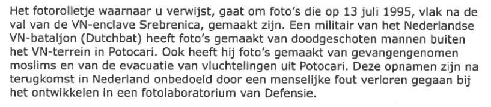

Preuve · Lettre
Ministère de la Défense, décision Wob sur la pellicule, 2 août 2021
Le passage
« Après le retour aux Pays-Bas, ces clichés ont été perdus involontairement, à la suite d’une erreur humaine, lors du développement dans un laboratoire photographique du ministère de la Défense. » Page 1, dernière phrase du troisième paragraphe. Traduit du néerlandais ; le texte original figure ci-dessous.
Texte original
“Deze opnamen zijn na terugkomst in Nederland onbedoeld door een menselijke fout verloren gegaan bij het ontwikkelen in een fotolaboratorium van Defensie.” Les lignes de la numérisation sont ici réunies.

Pourquoi ce document compte
Dans cette décision du 2 août 2021, le ministère de la Défense écrit que les clichés pris le 13 juillet 1995 près de Potočari par un militaire du Dutchbat ont été « perdus » lors du développement. Le 13 juillet 2021, Giltay avait demandé des documents relatifs à un prétendu ordre de destruction de la pellicule donné à un agent de l’armée de terre royale néerlandaise. Le ministère répond qu’aucun document de ce type n’a été trouvé et rejette la demande. Il renvoie au rapport du NIOD de 2002, qui jugeait improbable une destruction délibérée, et à l’enquête parlementaire. Le ministère répète ainsi en 2021 sa version selon laquelle ces clichés n’existent plus. Ils n’ont jamais été rendus publics.
Provenance
- Document
- Décision sur une demande fondée sur la Wet openbaarheid van bestuur (Wob), ancienne loi néerlandaise sur la publicité de l’administration
- Expéditeur
- Ministère de la Défense, administration centrale (Bestuursstaf), direction de la Communication, La Haye
- Destinataire
- Giltay ; le nom et l’adresse ont été rendus illisibles par le ministère de la Défense lui-même dans l’exemplaire que le ministère a envoyé par courriel
- Date
- 2 août 2021, apposée au tampon
- Référence
- BS2021016742
- Objet
- « Besluit op uw Wob-verzoek » (Décision sur votre demande Wob)
- Références
- Demande Wob de Giltay du 13 juillet 2021 ; décision du 16 septembre 2019 sur une demande antérieure ; rapport du NIOD de 2002 Srebrenica: een ‘veilig’ gebied et rapport Missie zonder vrede de la commission d’enquête parlementaire sur Srebrenica
- Signé
- Pour la ministre de la Défense, le secrétaire général adjoint, mr. M. Gazenbeek ; la signature elle-même est caviardée dans la numérisation
- Délégation de signature
- La décision vaut décision de la ministre de la Défense, Ank Bijleveld-Schouten, qui en porte la responsabilité.
- Caviardé
- Le nom et l’adresse du destinataire, le nom figurant dans la formule d’appel, le numéro de téléphone et l’adresse électronique de la personne à contacter ainsi que la signature
- Langue
- Néerlandais
- Pages
- 2
- Voir aussi
- Rapport du NIOD, passage sur l’information donnée par le commandant De Ruyter, 2002Rapport de la commission d’enquête parlementaire sur Srebrenica, 27 janvier 2003
Cité dans : l’essai « L’interdiction tombée, le livre debout » dans le chapitre (3) « Ce que révèle le livre : la dissimulation autour de Srebrenica ».
Fiche de preuve : https://
Document : https://
Dernière modification le 10 octobre 2026, consulté le 10 octobre 2026.

Cette page est une fiche de preuve du livre Le Général de dissimulation d’Edwin Giltay et du site web qui l’accompagne.